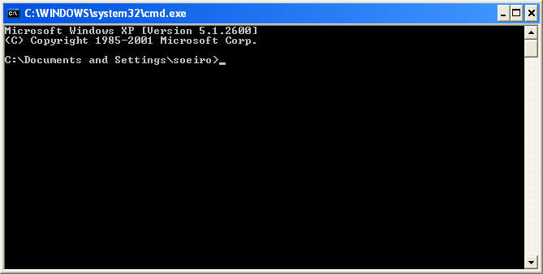

[Documentation Home]
[Installation Home]
Alphalinc Software Development Environment (ASDE) - Configuring the project
- Open Windows Explorer and choose a hard drive with enough space to hold all files for the new
project. An Alphalinc project has over 22.000 files and needs over 280MB of disk space for the
project (please remember that earlier in the process, you chose a drive with enough free space to
hold deployment files and the namespace database - which is around 3GB-5GB). It is a good practice
to create a folder named Projects on the root drive
(avoid placing it under Document and Settings) so that it can hold all subprojects.
If you have already created the directory Projects (or the equivalent in your language), skip this step.
|
Figure 1 - choose a drive with enough free space for the projects directory
|
- In Windows Explorer, browse to the rootDrive/Projects directory and check that
it is not located inside the Document and Settings folder. In this example,
the path is C:\Projects\.
|

Figure 2 - the projects folder (all projects will be placed inside this folder)
|
- You will now perform the first checkout of the repository files to your project
directory. This will be done in the command line window.
First, go to Start menu, and click on Run.
|

Figure 3 - running an arbitrary program
|
- Type CMD in the box and click on the Ok button.
|

Figure 4 - Running an arbitrary program
|
- You will then see the Command line prompt window.
|

Figure 5 - Command line prompt window
|
- Now go to the project directory. If you need to change the current drive letter,
just type the new drive letter, column and [ENTER].
C:\Documents and Settings\soeiro>C:
C:\Documents and Settings\soeiro>
Move to the projects (or the other language equivalent) directory by issuing the cd command:
C:\Documents and Settings\soeiro>cd \Projects
|
Figure 6 - command sequence to get to the project directory
|
- Perform the initial checkout of the new project into the projects diretcory .
When a Bazaar checkout command is performed, Bazaar copies all the current project files
into the current folder and binds it to the project branch. That means that whenever
you update from, or commit to the repository, Bazaar will automatically know its remote
location. When you perform a checkout, it might
take a while, because all files are then downloaded. After that, whenever you commit or update
changes, only the file differences are transmitted.
Type the following on the command line window to perform the initial checkout. Be careful because
if you don't specify what you want for the local folder name, Bazaar will try to guess the folder
name from the URL (although its guesses are ok, we will choose more meaningful names). In this
example, we want to start to work on the CustomerX project, main (development) branch.
C:\Projects>bzr checkout bzr://192.168.200.5/CustomerX/main CustomerXMain
Here is a quick help on all parts:
bzr - this call activates Bazaar
checkout - Bazaar command to start the checkout
bzr: - protocol to be used: Bazaar smart server protocol
192.168.200.5 - network name or address of the server
CustomerX - Alphalinc CustomerX project shared repository (a shared repository
is a place where we can find one or more branches)
main - the branch name, in this case main (development branch)
CustomerXMain - the name of the local folder that will be created to hold all files.
Usually, we keep this parameter empty so that it will download the repository to the default
value 'main'.
|
Figure 7 - project checkout
|
All project files have been downloaded. The folder structure for all projects will be similar to this figure:
|
|
|
The structure is based on the Rational Unified Process observations. Each of the main subfolders (Analysis and Design,
Deployment, Implementation, Management, Requirement, Test, Translation) will hold all the
artifacts that result from one of the software process activities. Documentation for each activity should be placed
inside its subfolder. In addition, the following items are important:
- .bzr folder - this folder contains local control files for the Bazaar dvcs and should be NOT be changed
- .bzrignore file - this file contains patterns of things that should be ignored by bazaar and not put under source control.
|
|
Figure 8 - General project folder structure
|
We will focus only on the Implementation folder for this guide.

|
- bin - executables needed by the system
- configuration - internal system configuration files
- docs - documentation for the source control and build system
- globals\nm - @NM artifacts
- java_libs - Java libraries needed for servlet compilation and deployment
- src\cls - Source files for Caché classes
- src\inc - Source files for Caché include definitions
- src\mac - Source files for Caché mac routines
- src\servlet - Source files for the reports java servlet
- web\csp - Caché csp files
- web\javaResources - files used during the servlet deployment
- web\reports - Jasper report files (generated by iReport)
- web\resources - static files used by Alphalinc (images, html, javscript, etc)
|
|
Figure 9 - Implementation folder structure
|
- You
now need to open the project directory (issue "cd ClientXMain"),
then to the Implementation folder (issue "cd ClientXMain"), where
you are supposed to run ANT. Ant will detect that you have not edited
the file user-config.properties to your needs. Ant will stop and
display an error message. When this happens, type:
C:\Projects>cd CustomerXMain
C:\Projects\CustomerXMain>cd Implementation
C:\Projects\CustomerXMain\Implementation>ant
|
Figure 8 - ANT asks the user to edit the user-config.properties file
|
- Use Windows Explorer to open the user-config.properties file with any simple text editor.
Warning: do not use MS Word or any other word processor software! Use only Notepad.exe,
Wordpad.exe or any other Text Editor. You can tell Windows to open of files of
type: properties with the same editor.
|
Figure 9 - open user-config.properties file for editing
|
|
Figure 10 - select the correct program from the list
|
|
Figure 11 - tell Windows to always use this program for this file type
|
- Edit the file. You can read the instructions that are in comment blocks. Sometimes, there
is a default option that can be used. You have to make sure there are no empty values (name=value).
If you miss a value, ant will complain and abort.
All lines that start with # are considered comments and are ignored.
Note: remember to enter the correct values regarding the NAMESPACE and deployment directories, as they
were configured in Create deployment directories,
Configure the web server (IIS) and
Configure a new namespace in Caché steps.
|
Figure 12 - the user-config.properties file
|
After editing this file, you are ready to begin working. The next time you run ant, the system will
deploy all files that are in the CustomerXMain directory to the defined Cache Namespace. Some files will
be loaded into Cache, other files will be copied to the deployment resources, csp, reports and servlet
directories. Additionally, Tomcat will be configured.
Please observe that the first time ant is run, the system must import all files into Caché.
As a result, it might take more than 30 minutes to complete.
Please go back to the installation document and continue from the
Using the tools part.
This document is the file projectDirectory/Implementation/docs/installation/project-configuration.html
Please feel free to make corrections and commit it to the repository.